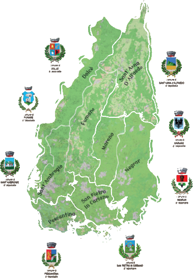
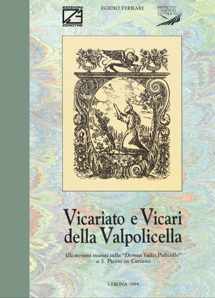

La Valpolicella e il suo territorio
La Valpolicella è la zona collinare che precede l'inizio delle Prealpi Veronesi, nella Regione Veneto. Comprende il territorio di otto comuni, tutti appartenenti alla provincia di Verona: Dolcè, Fumane, Marano, Negrar, Pescantina, San Pietro in Cariano, Sant'Ambrogio e Sant'Anna d'Alfaedo.


- Fumane
- Marano di Valpolicella
- Negrar di Valpolicella
- Sant'Ambrogio di Valpolicella
- San Pietro in Cariano
- Dolcè
- Pescantina
- Sant'Anna d'Alfaedo
La valle si estende per 240 km² ed è compresa nell'ansa del fiume Adige, da Ossenigo a nord a Parona di Valpolicella a sud, e dalle colline di Quinzano fino ad arrivare al monte Corno d'Aquilio.
La Valpolicella fu zona ricca di insediamenti romani, con ville, templi, villaggi e certamente cantine. Non è un mistero quanto il vino piacesse ai Romani, che introdussero la vite e l'enologia in tutte le zone colonizzate con il loro vasto Impero: il vino retico, prodotto in queste terre da uve appassite, era tra i preferiti dei vari imperatori.
La promozione enologica della zona allargata resta affidata alla Strada del Vino e al Consorzio Tutela Vini Valpolicella: il distretto lavora al loro fianco, dedicandosi al turismo di territorio.

Vicariato e Vicari della Valpolicella
di Egidio Ferrari — Edizioni Zerotre, Verona 1994.
Gli stemmi murati sulla «Domus Vallis Pulicelle» a San Pietro in Cariano:
la storia del Vicariato che per secoli governò la valle, raccontata attraverso
gli stemmi dei suoi Vicari.